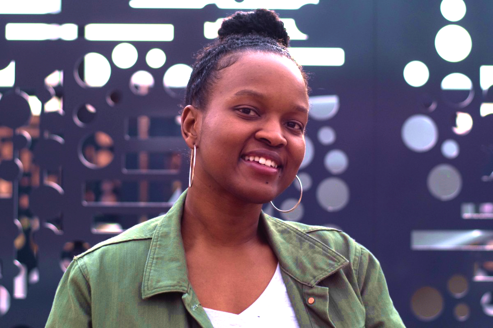

Adrian Massenburg
Web Developer and Illustrator

About
Illustration Work
Contact
Entry level Web Developer who is growth-driven and a self-starter with a passion for writing clean code and developing new projects.
Education
- Academy of Art University, MFA in Illustration (2011-2014)
- East Carolina Universtiy, BFA in Animation/Interactive Design (2006-2010)
Work Experience
Freelance Artist (2011- Present)
- Projects include fashion illustration, character illustration, logo design, and graphic design.
- Projects required time-management, adaptibilty, and problem-solving.
Whole Foods Market, Grocery Assistant Team Lead (2021-Present)
- Responsibilities for this role included time-management, coaching and leading team members, hiring, merchandising, problem-solving and adaptibilty.
- Additional skills required for this role included being a self-starter, organized and solution-oriented.
Whole Foods Market, Grocery Overnight Stocker/Supervisor (2017-2021)
- Responsibilities included ensuring the nightly goals were met while providing direction and support to my team.
- I utilized skills in strategy, organization, problem-solving, communication, and leadership.
Disney Consumer Products, Digital Art and Design Intern (2015-2016)
- Responsibilities included ui design, website wireframes, app wireframes, and graphic design.
- Additional skills required for this role included time-management, communication, and adaptibilty.
Skills
- Html
- Adaptibilty
- Self-starter
- Critical Thinking
- Illustration